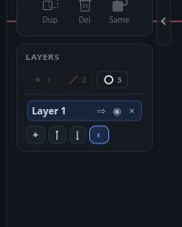

Layers & Pick Filter
Layer mengatur di mana geometri baru digambar dan memungkinkan mengelola objek dalam gambar yang kompleks.

1. Layer
- Layer aktif menerima geometri baru.
- Setiap baris layer punya tombol panah untuk memindahkan pilihan ke layer itu.
- Tambah layer baru dengan tombol + di panel Layers.
- Pindah layer naik/turun untuk mengubah urutan gambar (yang di atas gambar di atas).
- Titik, label dimensi, dan badge constraint hanya tampil di layer aktif.
2. Pick filter (gaya Plasticity)
Pick filter di panel Layers menentukan jenis objek apa yang bisa dipilih kursor. Gunakan pintasan Alt+1 / Alt+2 / Alt+3:
| Tombol | Jenis | Keterangan |
|---|---|---|
| Alt+1 | Points | Titik dapat dipilih. |
| Alt+2 | Lines | Garis dapat dipilih. |
| Alt+3 | Loops | Loop dapat dipilih. |
3. Memudarkan layer lain
Tombol ◐ di panel Layers memudarkan (fade) stroke dan loop fill dari setiap layer kecuali yang aktif. Untuk menyembunyikan fill layer lain sepenuhnya, gunakan Settings → Renderer → Loop fills · other layers.
Layers & Pick Filter
Layers organize where new geometry is created and help manage dense multi-part drawings.
1. Layers
- New geometry is always drawn onto the active layer.
- Each layer row has an arrow button to move currently selected objects onto that layer.
- Add layers with the + button in the Layers panel.
- Move layers up/down to control draw stacking order.
- Control points, dimension labels, and constraint badges only appear on the active layer.
2. Pick filter (Plasticity-style)
Pick filters in the Layers panel toggle which element types the cursor can select. Shortcuts Alt+1 / Alt+2 / Alt+3:
| Shortcut | Type | Description |
|---|---|---|
| Alt+1 | Points | Allow picking points/nodes. |
| Alt+2 | Lines | Allow picking lines, arcs, circles, and curves. |
| Alt+3 | Loops | Allow picking closed loops inside faces. |
3. Dimming other layers
The ◐ button in the Layers panel dims strokes and loop fills on every non-active layer. To hide inactive-layer fills completely, open Settings → Renderer → Loop fills · other layers.